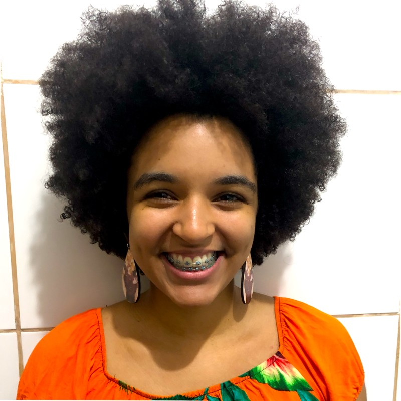
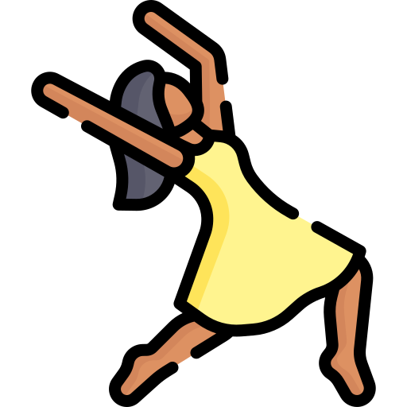

Olá Internautas
Meu nome é Andresa Fernandes, tenho 21 anos e estou explorando esse mundo da programação com foco em front-end. Sou natural de Salvador, moro sozinha há 5 meses e pretendo cursar sistema de informação na Universidade Federal da Bahia. Penso muito sobre a acessibilidade nos códigos e vejo que é algo que irei defender muito na minha carreira.
Hard Skills


...
Eu sou uma pessoa muito comunicativa, amo conversar, ouvir ideias e compartilhar também. Nas horas vagas eu gosto de sair para comer, ir ao cinema, um teatro e também me exercitar, amo dançar e em especial, a dança afro que é uma delícia, é o momento que eu mais tenho contato com o meu próprio ser.
